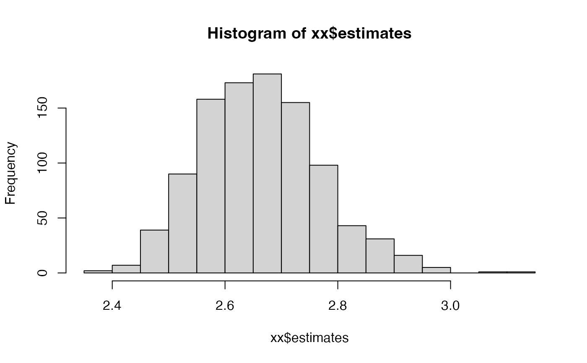

Compute 95% confidence intervals for derived estimates from a matrix population model
Source:R/compute_ci.R
compute_ci.RdThis function computes the 95% confidence interval for measures derived from
a matrix population model using parametric bootstrapping. In this approach a
sampling distribution of the matrix population model (MPM) is generated by
taking a large number of random independent draws using the sampling
distribution of each underlying transition rate. The approach rests on our
assumption that survival-related processes are binomial, while fecundity
is a Poisson process (see the function add_mpm_error() for details).
Arguments
- mat_U
A matrix that describes the growth and survival process.
- mat_F
A matrix that describes fecundity.
- sample_size
either (1) a single matrix of sample sizes for each element of the MPM, (2) a list of two named matrices ("
mat_F_ss", "mat_U_ss") containing sample sizes for the survival and fecundity submatrices of the MPM or (3) a single value applied to the whole matrix- FUN
A function to apply to each simulated matrix population model. This function must take, as input, a single matrix population model (i.e., the A matrix). For functions that require only the U matrix, use
compute_ci_U.- ...
Additional arguments to be passed to
FUN.- n_sim
An integer indicating the number of simulations to run. Default is 1000.
- dist.out
Logical. If TRUE, returns a list with both the quantiles and the simulated estimates. Default is FALSE.
Value
If dist.out is FALSE, a numeric vector of the 2.5th and 97.5th
quantiles of the estimated measures. If dist.out = TRUE, a list with two
elements: quantiles and estimates. quantiles is a numeric vector of
the 2.5th and 97.5th quantiles of the estimated measures, and estimates
is a numeric vector of the estimated measures.
Details
The inputs are the U matrix, which describes the survival-related processes, and the F matrix which describes fecundity. The underlying assumption is that the U matrix is the average of a binomial process while the F matrix is the average of a Poisson process . The confidence interval will depend largely on the sample size used.
References
Chapter 12 in Caswell, H. (2001). Matrix Population Models. Sinauer Associates Incorporated.
See also
Other errors:
add_mpm_error(),
calculate_errors(),
compute_ci_U()
Author
Owen Jones jones@biology.sdu.dk
Examples
set.seed(42) # set seed for repeatability
# Data for use in example
matU <- matrix(c(
0.1, 0.0,
0.2, 0.4
), byrow = TRUE, nrow = 2)
matF <- matrix(c(
0.0, 5.0,
0.0, 0.0
), byrow = TRUE, nrow = 2)
set.seed(42)
# Example of use to calculate 95% CI of lambda
compute_ci(
mat_U = matU, mat_F = matF, sample_size = 10, FUN =
popbio::lambda
)
#> 2.5% 97.5%
#> 0.300000 1.824895
# Example of use to calculate 95% CI of generation time
compute_ci(
mat_U = matU, mat_F = matF, sample_size = 40, FUN =
popbio::generation.time
)
#> 2.5% 97.5%
#> 2.386966 3.072293
# Example of use to calculate 95% CI of generation time and show the
# distribution of those bootstrapped estimates
xx <- compute_ci(
mat_U = matU, mat_F = matF, sample_size = 100, FUN =
popbio::generation.time, dist.out = TRUE
)
summary(xx$quantiles)
#> Min. 1st Qu. Median Mean 3rd Qu. Max.
#> 2.476 2.581 2.686 2.686 2.791 2.896
hist(xx$estimates)
